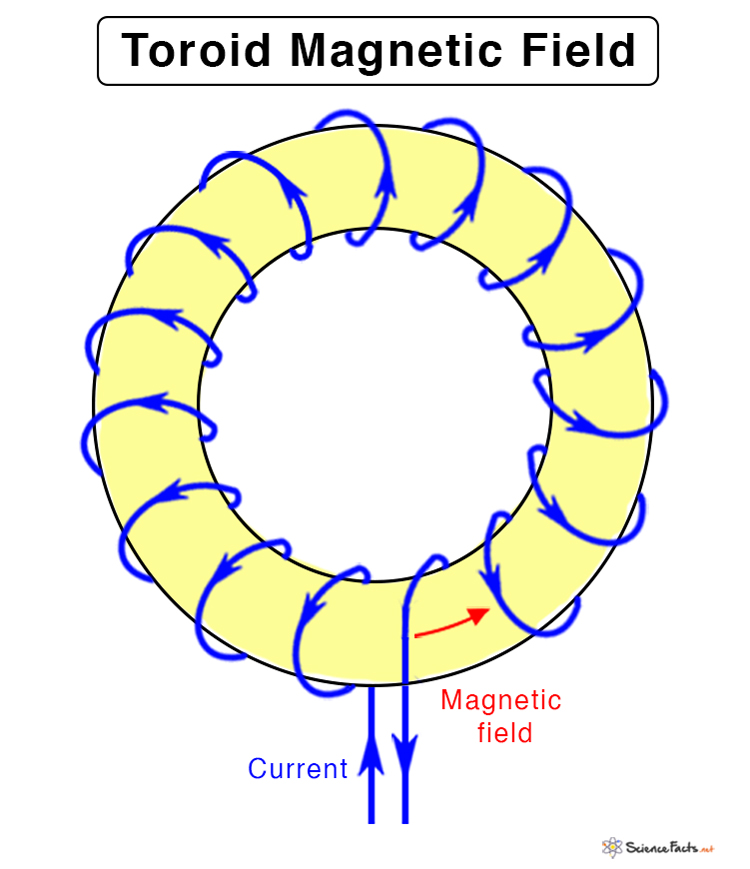
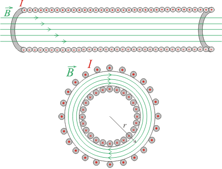

A toroidal coil (or toroid) is a coil of wire wound in a donut-shaped form that creates a magnetic field confined primarily within the torus. Toroidal coils are important in electromagnetism because they provide excellent magnetic field confinement and are used in various applications.
What is a Toroidal Coil?
🧲 Toroidal Coil Definition
A toroidal coil is a coil of wire wound in a circular or donut shape that creates a magnetic field primarily confined within the torus.
The magnetic field lines form closed loops within the toroid, with minimal external field leakage.

Diagram showing a toroidal coil with current flow and confined magnetic field lines.
Toroid Diagram

Current go in and out creating a circular magnetic field
Magnetic Field Inside a Toroid
⚡ Field Calculation Using Ampère's Law
The magnetic field inside a toroid can be calculated using Ampère's Law:
\[ B = \frac{\mu_0 NI}{2\pi r} \]
Where:
\( B \) is the magnetic field strength
\( \mu_0 \) is the permeability of free space (4π × 10⁻⁷ T⋅m/A)
\( N \) is the total number of turns
\( I \) is the current through the coil
\( r \) is the distance from the center of the toroid
Calculate Enclosed Current: \( I_{enc} = NI \) where \( N \) is the total number of turns
Evaluate the Integral: \( B(2\pi r) = \mu_0 NI \)
Solve for B: \( B = \frac{\mu_0 NI}{2\pi r} \)
Watch this For Better Understanding:
Key Properties of Toroidal Coils
🔬 Important Characteristics
Field Confinement: Magnetic field is confined within the toroid
Minimal Leakage: Very little external magnetic field
Field Variation: Field strength varies with radius inside the toroid
Field Confinement: Excellent for applications requiring confined fields
Efficient Design: More efficient than solenoids for some applications
Field Distribution
Inside the Toroid: Field is strongest near the inner radius
Field Direction: Use the right-hand rule to determine direction
Outside the Toroid: Field is approximately zero
Uniformity: Field is more uniform than in a solenoid
Example: Toroidal Coil Field Calculation
Problem: A toroidal coil has 1000 turns and carries a current of 2.0 A. The inner radius is 5.0 cm and the outer radius is 7.0 cm. Calculate the magnetic field at a radius of 6.0 cm.